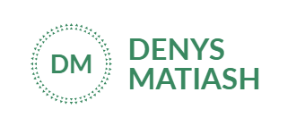
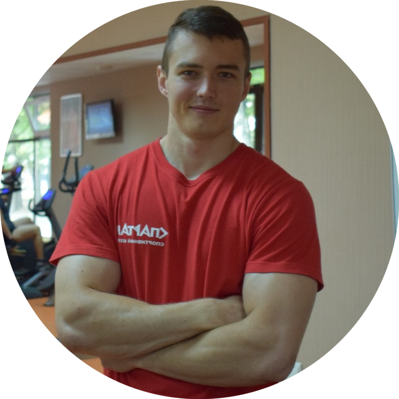

 Poltava
Poltava
 (068) 75 24 991
(068) 75 24 991
den4ik00424@gmail.com
 Instagram
Instagram
 Facebook
Facebook
Personal data:
Ukrainian, single, date of birth: 24.05.1996.
Education:
Bachelor - Poltava National Technical University named after Yuri Kondratyuk,
Department of Physical Education, Sports and Human Health, specialty - physical rehabilitation.
Work:
- July 2017 - August 2018 SC "Spartak", gym instructor, Poltava, st. Independence Square 24.
- January 2019 - February 2020 FC "Fitland Center", gym instructor, Poltava, st. Gogol 12.
- December 2020 - January 2020 Hypermarket "METRO", sales consultant,
p. Suprunivka, Poltava, street Kyiv Highway 1-A.
Personal qualities:
- Hard work;
- Perseverance;
- Responsibility;
- Punctuality;
- Sociability;
- Diligence;
- Attentiveness.